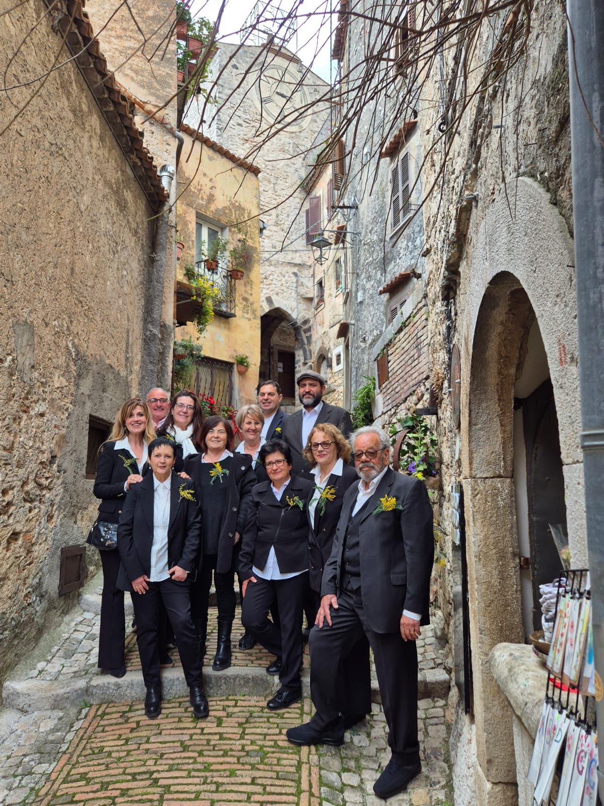
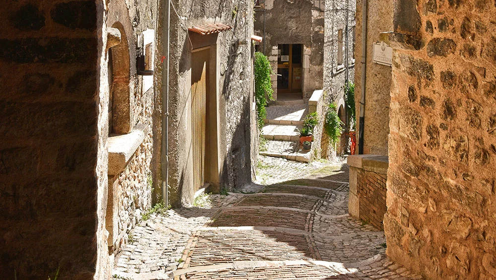
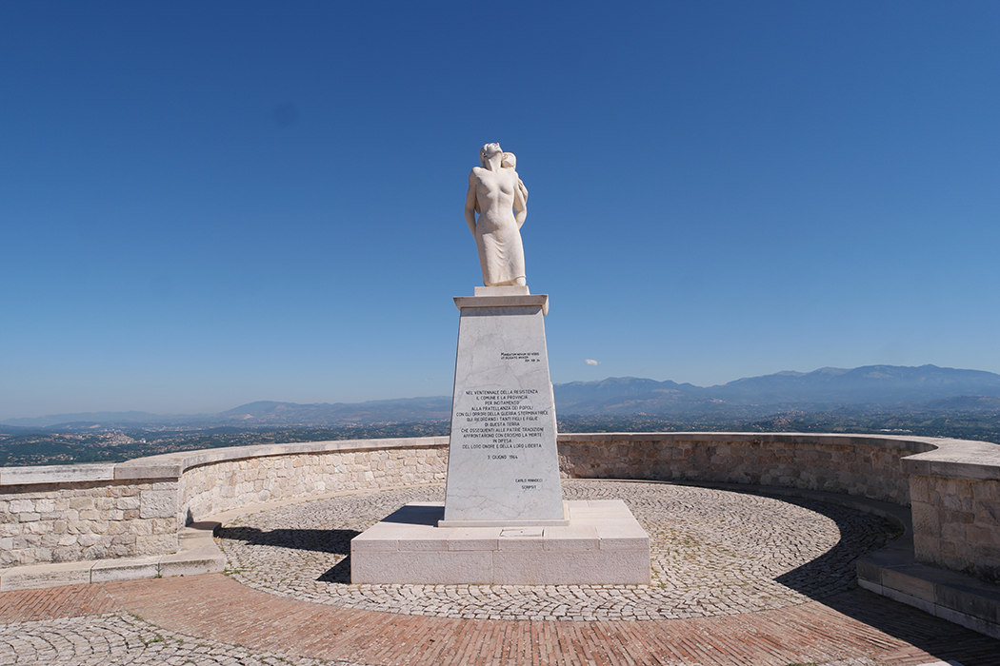
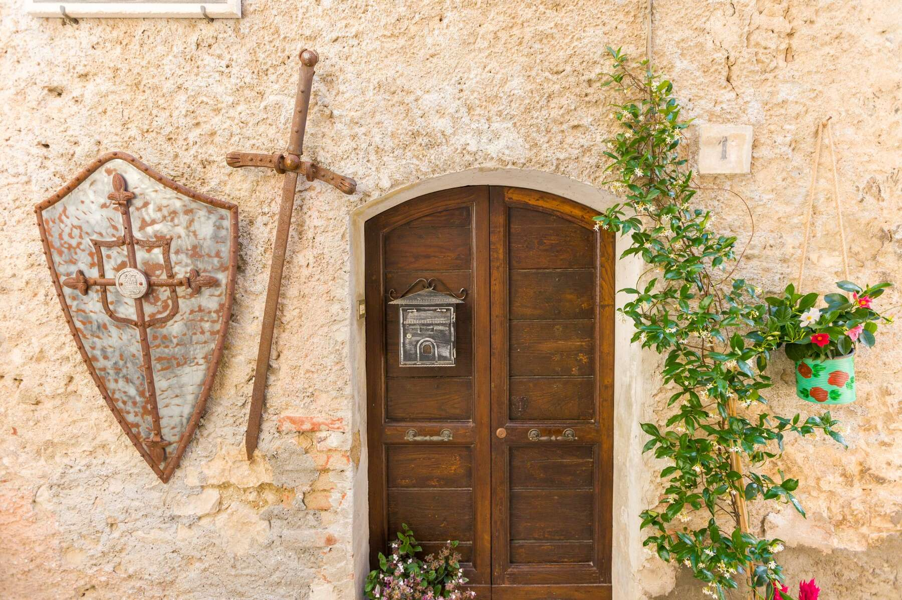
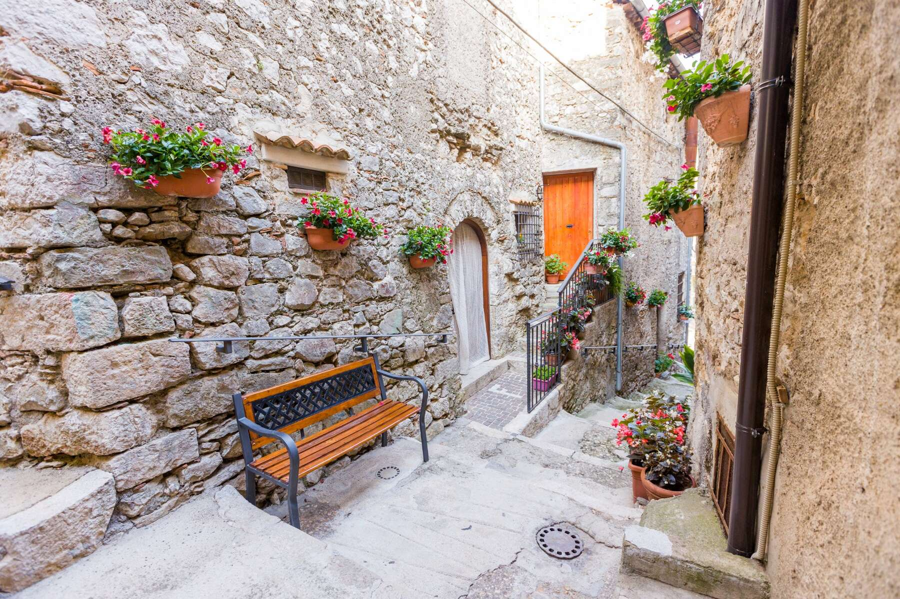
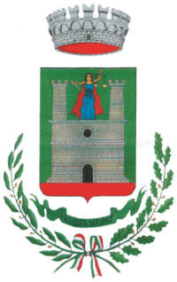
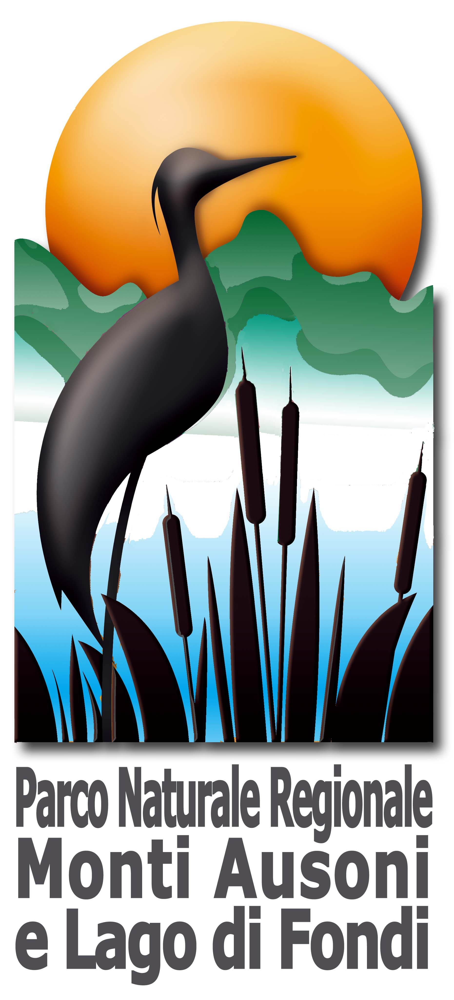
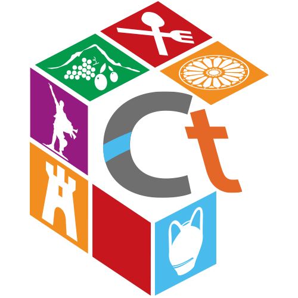

“Uniamo le forze per conservare la nostra identità culturale”
"La Scarana APS" è un'associazione che ha come scopo quello di tramandare gli antichi mestieri e valorizzare il nostro territorio.
Nata nel 2018, la compagine associativa conta 50 soci tra i quali 11 stimati professionisti, imprenditori e dipendenti pubblici nella vita, tutti artigiani per passione e mossi dall’attaccamento al proprio territorio ed alla sua identità culturale.
La mission associativa è costituita dalla valorizzazione e promozione della cultura locale in tutte le sue manifestazioni, materiali ed immateriali. Con questo fine è sempre alla ricerca di nuovi percorsi culturali autentici ed emozionali che manifestino forti legami con il territorio ed utili a ribadire l’importanza di un turismo slow, outdoor ed interattivo per migliorare la qualità della vita, stimolare la conoscenza e sostenere l’impatto della globalizzazione tutto nel rispetto della sostenibilità e dell’ambiente.
L’associazione persegue i suoi fini attraverso l’organizzazione di eventi culturali, reading letterari, concorsi di poesia, concerti di musica colta, performance artistiche ed esperienze enogastronomiche. Una sorta di percorso fisico e spirituali per assaporare anche gli aspetti più intimi di un luogo legati alla sua cultura, alle sue eccellenze e al suo paesaggio.

Il cuore pulsante della nostra attività è il progetto dedicato alla mitica regina dei Volsci, Camilla, cantata dal Sommo poeta Virgilio nel libro VII e XI dell’Eneide. Un omaggio alle radici storiche di Castro dei Volsci.
Questo progetto vede l’associazione impegnata nella gestione di 11 laboratori/botteghe, all’interno del circuito medievale della Via Civita in Castro dei Volsci, in cui lavorano ed espongono i loro prodotti gli artigiani di Camilla. Il visitatore, lo studente o chiunque si trovi a passare del tempo tra i vicoli del borgo può assistere al processo di creazione e realizzazione del manufatto artigianale, sentire gli odori, ascoltare i rumori, vedere colori e vivere un tempo de-storificato, passato ma presente, tra le mani sapienti degli artigiani a lavoro in una atmosfera rarefatta e mitica che affascina e coinvolge, inonda l’animo e porta indietro con i ricordi.
Esplora le Botteghe
I nostri artigiani sono veri e propri story tellers e custodi del territorio. Il nostro impegno quotidiano si basa su pilastri fondamentali:
Educa alla riflessione, riprende l'abitudine del lavoro collettivo e ridona valore al tempo, lontani dalla frenesia.
Lavoriamo con materiali di riutilizzo, riducendo sprechi e salvaguardando l'ambiente in ottica circolare.
Offriamo un'esperienza che innesca uno scambio culturale autentico tra viaggiatore e artigiano narratore.
Tramandiamo i saperi alle nuove generazioni per contrastare l'omologazione e creare opportunità.

Castro dei Volsci, borgo affascinante della Ciociaria, si trova all’interno della Valle del Sacco, arroccato su un estremo lembo dei Monti Ausoni proteso verso la catena dei Monti Lepini.
Le sue origini risalgono ai Volsci, fiera popolazione italica che a partire dall'VIII-VII sec. a.C. occupò questi territori. Del loro passaggio restano ancora oggi testimonianze preziose, come le mura poligonali di Monte Nero e il luogo di culto di Colle della Pece. Fu proprio in onore di questa eredità storica che, nel 1860, il paese assunse l'attuale toponimo.

Dopo il periodo di splendore romano nella valle, le incursioni saracene spinsero la popolazione a rifugiarsi sullo sperone dove, già dal 542 d.C., sorgeva il Monastero di S. Nicola. Nacque così il Castrum, fortezza a difesa dei confini papali.
Ancora oggi, l'impianto urbanistico conserva il suo antico fascino: una doppia cinta muraria abbraccia il centro abitato. Via Civita racchiude la parte più alta e la rocca, mentre le antiche porte (Porta della Valle, Porta di Ferro, Porta dell’Ulivo e Porta dell’Orologio) segnano gli accessi storici a questo dedalo di vicoli.

Dal 1410 al 1816, la storia di Castro si intrecciò saldamente con la famiglia Colonna, a cui i castresi mantennero una lealtà incrollabile. Nel Novecento, il paese visse i drammi della Seconda Guerra Mondiale, onorati oggi dal toccante monumento della "Mamma Ciociara".
Oggi, la straordinaria bellezza dei suoi belvedere e del patrimonio architettonico è riconosciuta a livello nazionale: dal 2015 Castro dei Volsci è orgogliosamente parte dell'Associazione "I borghi più belli d'Italia".
si ringrazia Eugenio Campagna e lo studio fotografico Cromie per le foto
La Scarana APS collabora attivamente con gli enti locali per promuovere la cultura e le eccellenze della Ciociaria.


